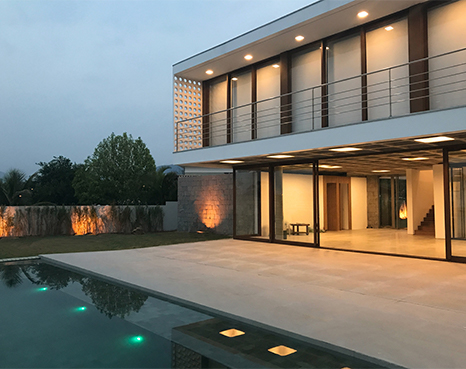
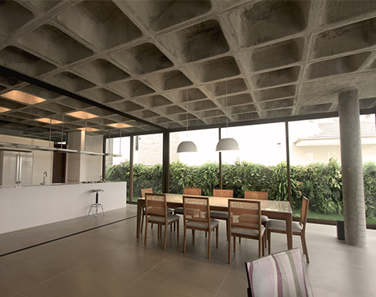
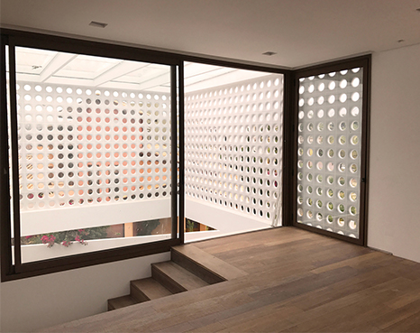

Designed by internationally acclaimed architect Rafael Viñoly, the commanding 55-story tower offers 130 distinguished one to four bedroom residences showcasing panoramic views of the Manhattan skyline, including the Empire State Building, the Chrysler Building and the Flatiron Building.
277 Fifth residents are poised to enjoy the very essence of what makes living in New York extraordinary. Interiors are graced with oversized windows and ceilings reaching ten feet, in addition to a selection of warm woods and elegant natural stone.
The kitchen is fully customized with a suite of stainless-steel finish Miele appliances including: refrigerator and freezer, wine cooler, gas cooktop with retractable ventilation hood, convection oven, speed oven, and dishwasher.
The living room and its surroundings in Reserva house are totally flexible, permitting various layouts for the possible requirements of the growing Family. The upper floor consists of the private Family area: bedroom, bathrooms, and home-theater.
The bathrooms open to internal small patios that provide natural lighting and ventilation. The upper floor façade is covered with void elements, called “cobogós” that protects from solar heating of the spaces and provide natural ventilation and private use.
The roof floor is used to the technical areas as water reservoir, water heating solar panels, pool water heating tubes and other utilities in order to make the house life as sustainable as possible. These utilities are held in a sculptural concrete and stainless steel structure. mountains.
The intervention continues the game of time offsets and brings the design to a contemporary interpretation of the avant-garde. Most modern furniture and decorations brings interior of this house to another level. The preserved exterior tells us a lot about the history of this house.
The composition of the openings, the ambiguous elements of the addition and the materiality blend the two distinct entities. The space of the new stair and its design bring light into the center of the entire composition.
This is a magnificent opportunity to own a 4,700 sf, 5-bedroom, spectacular home with design features from a world-renowned architect in a unique boutique condominium building that provides the intimacy of a private residence but offers the finest white glove services.